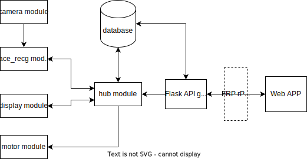
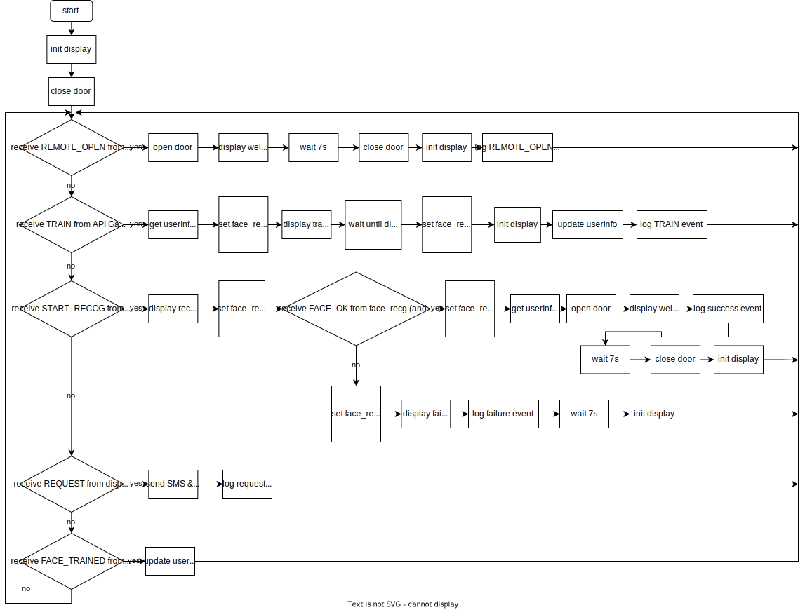
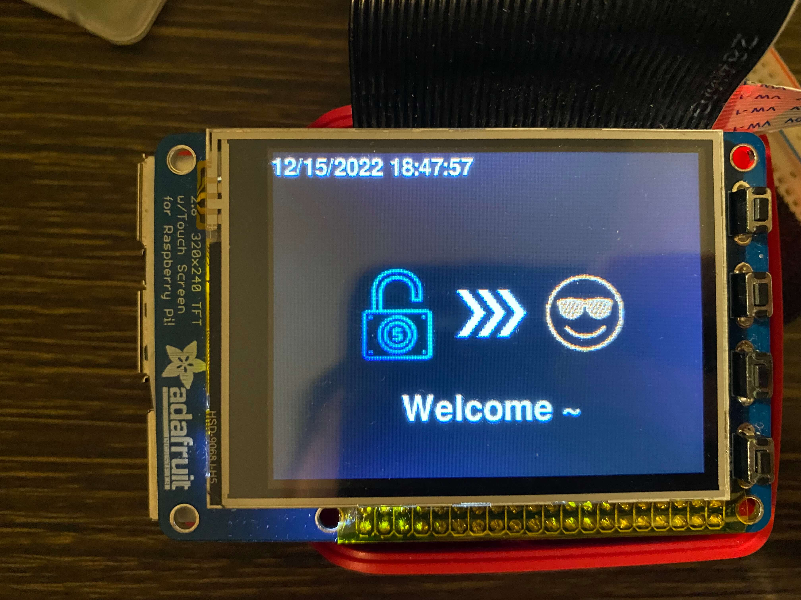
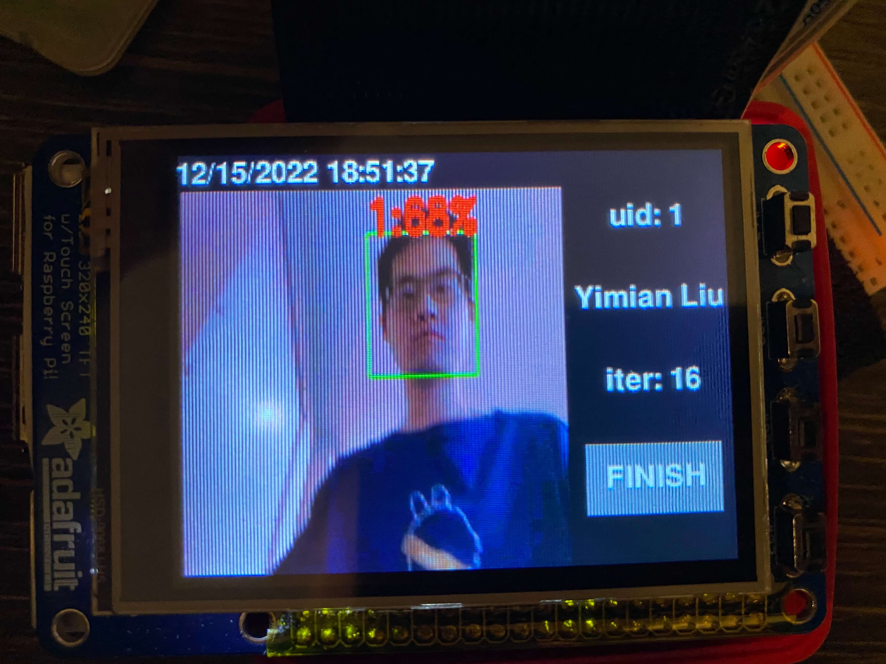
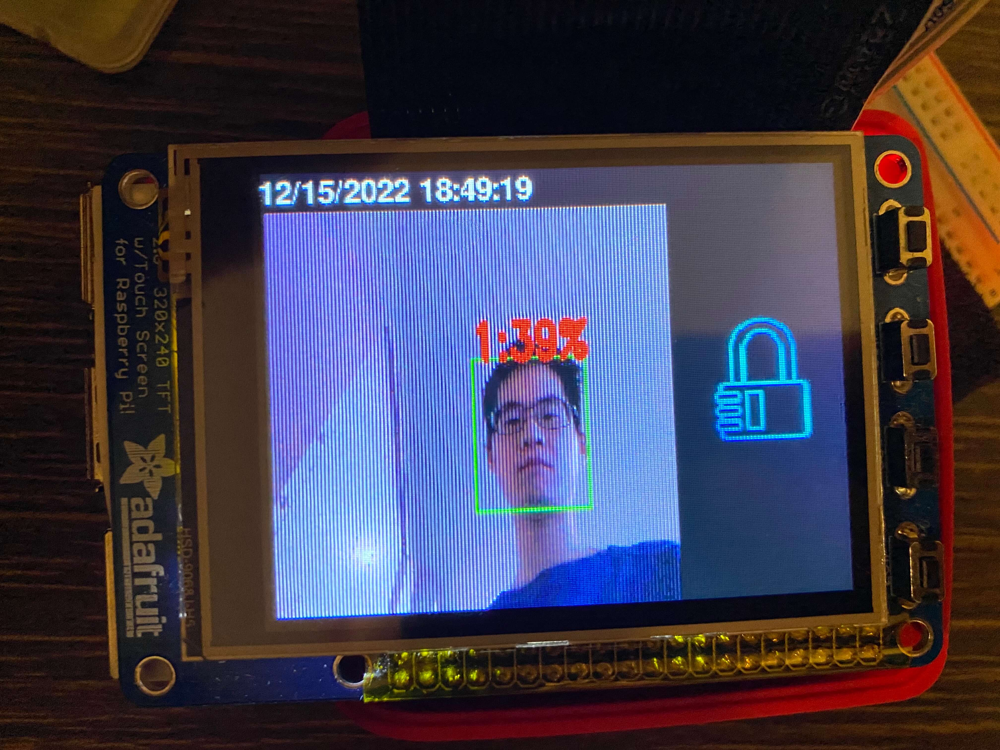
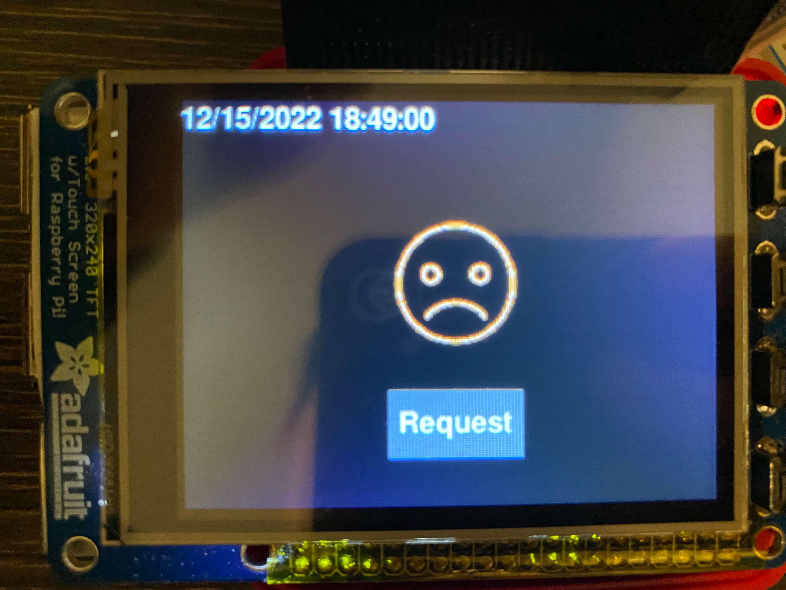
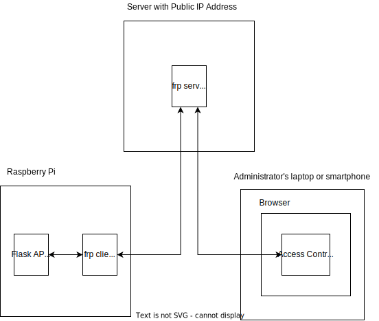

Access Control
ECE 5725 Fall 2022
Access Control System
By: Zhihui Liu(zl826), Yimian Liu(yl996)
Demonstration Video
Introduction
Even though some ‘smart’ gates and doors can recognize human faces via cameras nowadays, the efficiency and accuracy of facial recognition cannot be 100% guaranteed. This leads to some non-trivial questions:
What if the door fails to recognize a person?
Should the host just let the person stand by the entrance?
What if the entrance was intruded by someone?
Does it take too long to find out the intruders from video recordings?
Do video recordings take up large memory spaces?
Therefore, there are still many places to improve for such intelligent machines. In this project, we designed and implemented a more reliable and efficient integrated access control system based on Raspberry Pi, Pi camera, PiTFT, and servo motor. The system has four main features, which are facial recognition, user management, remote access control and activity logging. With our system installed in your house or office buildings, the above embarrassment will never happen. Moreover, the access security will be further enhanced.
Project Objectives:
- Recognize and identify different human faces with LBPH algorithms from OpenCV
- Open and close the door (represented by the rotation of the servo motor) automatically when the face is successfully recognized
- Send the open request to the administrator’s phone and email via HTTP by pressing the button on the PiTFT when failing to be recognized
- Display the real-time training image and information such as user ID, username and the number of iterations on PiTFT.
- Design a user-friendly interface to implement the above functions on PiTFT.
- Design a database to store all activities including the request, training and visitors’ face images along with time information.
- Develop an access control system website, where the administrator can look at the live video stream from the Pi camera, open the door remotely by clicking the respective button, add and train users’ faces, look up the activity history, and edit the administrators’ email and phone address
Design
Overall Software Design
The Access Control system consists of several subsystems, including a camera module for capturing live video, a face recognition module for training and recognizing faces, a display module for a local touchscreen real-time display, a motor module sending signal to a step servo motor to control a gate or door, a database to record user information and logs, a Web APP (website) running on user’s browser, a Flask-based API gateway to interact with the Web APP, and a hub module which handles the state changing of the whole system. Since the backend part is running on Raspberry Pi, which hardly has a public IP address, a FRP reverse proxy was used to expose the Flask API gateway’s port to a public server, so everyone can access it through the Internet.
The Figure shows all the subsystems and the dataflows among these subsystems. In this design, all subsystems have several states, and their states are managed by the hub module. All the subsystems excluding the hub module cannot change their states or other module’s states. Instead, they are designed to dedicatedly execute the instructions from the hub module, and return the result / events to the hub module if needed.
- The data flowing from the camera module to the face_recg module is actually a video stream, where the video is captured via the camera connected to the Raspberry Pi. The video stream is then passed through the face_recg module to be trained or to be recognized, which is controlled by the signal from the hub module.
- The face_recg module will send the result to the hub module after every video frame is trained or recognized.
- The display module handles the display on the local touchscreen and also receives instruction from the user’s touch events. It has several states to display different pre-designed pages to interact with users.
- The hub module will let the display know which pages should be displayed. All the button’s touch events captured by the display module will be reported to the hub module. The hub module also controls the states of the motor by sending instructions to it. The hub module can interact with the database to collect data helping it make a decision, or generate a log to the database after a predefined event happened. The hub module will also interact with the Flask API gateway to get instructions from the administrators via the admin Web APP.
- The special part of the Flask API gateway module is that it also directly interacts with the database, which is used for the Web APP to fetch data such as user’s information and log which are stored in the database.
Hub Module
This figure shows the flowchart of how the hub module coordinates every subsystem. After the system starts, the hub module will firstly initialize the display module to display the default standby page. Then a command will be sent to the motor module to close the door. Then the system will get into the main loop.
If the hub module receives a REMOTE_OPEN signal from the API gateway, it then knows that the administrator has pressed the open door button on the webpage remotely, so the hub module will send a command to the motor module to open the door. Also, the hub module will send a command to the display module to display a welcome page on the local touchscreen display. After waiting for 7 seconds, The hub module will send a “close” signal to the motor module, set the display to default standby page, and insert a log to the database. Please note that the waitting behavior was implemented in another thread, so it will not block the main loop.
If the hub module receives a TRAIN signal from the Flask API gateway, it will know that the administrator pressed the train button for a user. It will then get the information of this user from the database, and then change the face_recg module to TRAIN mode to collect the user’s face and train this user. Then, the hub module will also send commands to the display module to display the pre-designed training page. Then, the hub module will block to wait for receiving the FINISH signal coming from the display module, which means that the user pressed the finish button on the local touchscreen display. Then, the hub module will set the face_recg module to the default IDLE mode. It will change the display to the default standby page, update the user information in the database, and log this event into the database.
When the hub module receives a FACE_TRAINED signal, it will know a user has been trained for another one iteration. It will update the user’s information in the database, and go back to the main loop.
If the hub module receives a START_RECOG signal from the display module, which may mean that a visitor pressed the button on the standby page of the local display. The hub will first send a signal to change the display to the predefined recognition page, and set the face_recg module to RECG mode to identify any possible valid user’s face in the live camera stream. If the face_recg module identifies a user’s face in 15 seconds, the hub module will set the face_recg module to IDLE mode, get user information from the database, display a welcome page on the local display, and open the door. After 7 seconds, it will send the close door signal to the motor module, and set the display module to display the default standby page. Otherwise, the hub module will set the face_recg module to IDLE status, display a failure page on the local display, log the failure event to the database, wait 7 seconds, and initialize the local display to default page.
If the hub module receives a REQUEST signal from the display module, it will know that a visitor pressed the request button on the failure page. It will send an EMAIL and SMS notification to the system administrator, according to the pre-set email address and phone number. It will also insert a log to the database.
Real-time Facial RecognitioSound Detection
Once the face images are captured and obtained frame by frame, they will be firstly converted to the gray image to reduce the lighting effect. The region of interest (ROI) of human faces will then be detected and extracted as rectangles using harr-cascade classifiers from OpenCV. The Local Binary Patterns Histograms (LBPH) of ROI will be computed and compared with the results of pre-trained facial models [https://pyimagesearch.com/2021/05/03/face-recognition-with-local-binary-patterns-lbps-and-opencv/]]. The recognition process is also packaged in the OpenCV library function predict() under the class face.LBPHFaceRecognizer_create().
One of the advantages of LBPH algorithm to recognize faces is that it is updatable compared to other popular algorithms such as eigenfaces. This means that we do not need to retrain the whole model when new faces are added and hence saves a lot of time. As a result, the training speed for the first 100 images is over two pictures per second.
Touchscreen Display
The touchscreen display was implemented with Python and Pygame, on a PiTFT plugged on the Raspberry Pi. Pygame is a popular Python library for writing video games. The touchscreen display module uses this library to draw the elements, such as buttons, text box, etc, to form pages. The display was designed with a unit of pages, where which page to be displayed is controlled by a local flag. The display provides methods for the hub module to change its flag thus change the page to display. The main method for the display method to get instructions from users is by detecting the user's touch behavior on the buttons’ zone.
There are five pages of the display module: default standby page, facial recognition page, training page, welcome page, and failure page. The default standby page is the default page of the display module. This page includes the name of the project and OPEN button for users who want to open the door. When the display page receives an INIT signal from the hub module, it will display this page. When the open button is clicked, it will send a START RECOG signal to the hub module, and switch to the facial recognition page. The facial recognition page includes a live video of the camera for users to adjust their faces, a lock icon indicating the door is still locked. When the display module receives the WELCOME signal from the hub module, it will switch to the welcome page. The welcome page is simply the sentence in the format of ‘Welcome [username]~’, and a pre-designed image indicating the successful unlock. The failure page will display when receiving a FAILURE signal from the hub module. The display module will display a crying face icon indicating the failure recognition. This page also includes a request button for users to send a SMS and Email request to the system administrator.
Database
CREATE TABLE `user` ( `uid` INT UNSIGNED AUTO_INCREMENT PRIMARY KEY, `active` BOOLEAN DEFAULT FALSE, `name` VARCHAR(40) NOT NULL, `createtime` DATETIME DEFAULT CURRENT_TIMESTAMP, `updatetime` DATETIME DEFAULT CURRENT_TIMESTAMP ON UPDATE CURRENT_TIMESTAMP, `iteration` INT UNSIGNED DEFAULT 0 ); CREATE TABLE `log` ( `lid` INT UNSIGNED AUTO_INCREMENT PRIMARY KEY, `uid` INT UNSIGNED DEFAULT NULL, `type` ENUM('USER_ADDED', 'USER_ACTIVE', 'USER_DEACTIVE', 'TRAIN', 'RECG_SUCCESS', 'RECG_FAILURE', 'REQUEST', 'REMOTE_OPEN') DEFAULT NULL, `img` LONGTEXT DEFAULT NULL, `data` TEXT DEFAULT NULL, `createtime` DATETIME DEFAULT CURRENT_TIMESTAMP, FOREIGN KEY (uid) REFERENCES user(uid) );
A database was used to persist the user information and log data onto the Raspberry Pi SD card, so this data will not be lost after the system runs out of power. Because these data are well-structured, a relational database MariaDB, which is a popular open source branch of MySQL, was selected to take the charge. As shown in the code, two tables were designed. The user table aims to record the users’ information, including user id, active status, user name, create time, update time, and training iteration of the user. The log table includes the data of the logs, such as the log id, user id for user related to this log, the type of this log, an image/photo of the event captured from the camera if have, some extra optional data, and also the createtime of the log. The uid column in the log table was designed to be a foreign key of the uid in the user table, to make sure there will not be invalid user id in this column.
Flask-based API Server
app = Flask(__name__) @app.route("/api/addUser") def api_addUser(): id = db.addUser(request.args.get('name')) return jsonify({ "status": True, "id": id }) @app.route("/api/getUser") def api_getUser(): return jsonify(db.getUser()) @app.route("/api/activeUser") def api_activeUser(): db.activeUser(request.args.get('id')) return jsonify({ "status": True }) @app.route("/api/deactiveUser") def api_deactiveUser(): db.deactiveUser(request.args.get('id')) return jsonify({ "status": True }) @app.route("/api/train") def api_train(): id = request.args.get('id') queue_cmd_to_hub.put({ "type": 'TRAIN', "id": int(id) }) return jsonify({ "status": True }) @app.route("/api/getLog") def api_getLog(): return jsonify(db.getLog()) @app.route("/api/openDoor") def api_openDoor(): queue_cmd_to_hub.put({ "type": 'REMOTE_OPEN' }) return jsonify({ "status": True }) @app.route("/api/getLogImg") def api_getLogImg(): id = request.args.get('id') img = db.getLogImg(id)[0][0] return send_file(imgc_base642bytesio(img), mimetype = 'image/jpg') @app.route("/api/getInfo") def api_getInfo(): return jsonify({ "email": global_shared_dict['email'], "telephone": global_shared_dict['sms'] }) @app.route("/api/setInfo") def api_setInfo(): global_shared_dict['email'] = request.args.get('email') global_shared_dict['sms'] = request.args.get('telephone') return jsonify({ "status": True })
Flask was utilized to implement a series of HTTP Restful API for the backend system on the Raspberry Pi to interact with the Web APP on the browser of administrator’s smartphone or laptop. As shown in the code, APIs for adding users, getting user information, active user, deactivate user were developed. So when the administrator presses the corresponding buttons on the Web APP, the Web APP will send AJAX HTTP requests to the corresponding APIs. The Flask API gateway will then interact with the database to execute the corresponding operation. Besides, the API gateway also provided methods for the Web APP to get logs and the log image. These two are separated into two APIs because the images are usually large which may cause considerable transmission delay. So we make the log images to be loaded by the Web APP as needed by separating it into an individual API. The above six APIs will interact with the database, but will not not interact with the hub module. The following two API will interact with the hub module: train API and remote open API. When the train API is called, it will send a signal to the hub module so the hub module will know the administrator wants to train a user. The remote open API will also send a REMOTE_OPEN signal to the hub module to let it know the administrator wants to open the door remotely. The last setInfo API is used to record the admisitors’s email address and phone number, for the convenience to send a notification to the administrators when some press the request button on the local touch screen after a failure facial recognition.
Multiprocessing
Multiprocessing was used to make full use of the four cpu cores of the Raspberry Pi, since this system, especially the training and facial recognition parts, is computing-intensive. The more computing resources can be utilized, the less delay the user will suffer, thus giving rise to a better user experience. Since Python cannot automatically distribute its threads onto different cpu cores, a Python multiprocessing library was used to achieve this. In our design, all backend modules, including the camera module, the face_recg module, the motor module, the display module, the hub module, and the Flask API were separated on different processes. The benefit is that all the four cpu cores can be utilized, and a block on one process will not block another process. For example, while the face_recg module tries hard to recognize a face in a video frame, the API gateway can still respond to the Web APP’s request promptly. However, the Inter Process Communication (IPC) is not as easy as in a single process. For example, when one process is reading data, it may want to make sure that no other can change the data. Otherwise, the data it reads may be ‘half old and half new’, if some other process changed it during the reading. To avoid this, a lock mechanism is required to make sure only one process can access the corresponding memory at one time. Thankfully, the Python Multiprocessing library includes several data structures which are easy to use while implementing the lock mechanism implicitly.
In our design, we used the multiprocessing queue data structures to transmit instructions among modules, and used multiprocessing dict, which is a safe shared memory among processes, to share the live video frame, and some important configuration information globally among modules.
Stream-based CCTV Server
The video is first captured by the camera module with the opencv2 library, the video was separated into images for the face_recg module to recognize and label. Then, the labeled latest frame will be shared with all modules via the multiprocessing dict through the shared memory.
def genVideoStream(): while True: frame = imgc_base642bytesio(global_shared_dict['live_video_frame']).getvalue() yield (b'--frame\r\n' b'Content-Type: image/jpeg\r\n\r\n' + frame + b'\r\n') @app.route("/api/live") def api_live(): return Response(genVideoStream(), mimetype='multipart/x-mixed-replace; boundary=frame')
A Flask API was developed for obtaining live video streaming from the Raspberry Pi camera for the Web APP, so the administrator can check who wants to get access in real time. Thanks to the HTTP multipart/x-mixed-replace method, we can easily keep a HTTP connection alive and constantly send new frames to the frontend Web APP to let it update it continually. In this case, after the HTTP connection is established, the server will constantly send new video frames in the shared memory to the Web APP in the format of jpeg, so the Web APP can update the corresponding image, which makes the image like a video.
FRP Reverse Proxy
A FRP reverse proxy was introduced to make the Flask API gateway on the local Raspberry Pi to be accessible from everyone in the world with an Internet connection. This is achieved by the TCP reverse proxy function provided by FRP. The FRP consists of frp server and frp client. SInce the Flask API gateway is running at 5000 port on localhost, the frp server was configured to listen to the 80 port of the public IP interface, and redirect all the incoming tcp connection to the localhost 5000 port on the Raspberry Pi through the frp client on Raspberry Pi. Therefore the Access Control Web APP in the administrator device’s browser can access the Flask API gateway by sending HTTP requests to the 80 port of the public server.
Testing
At first, the speed of facial recognition is slow to around 2 frames per second which gives rise to a bad user experience. We investigated the delay caused by each part, and found that the bottleneck was the video capturing. To solve this, we firstly pipelined the picture capturing and facial recognition by separating the video capturing task onto different processes. We also replaced the old PiCamera library with the cv2 library for better performance. These measurements significantly improved the speed from 2 frames per second to nearly 10 frames per seconds, making the facial recognition faster and the CCTV more fluent.
During the test, we found the behavior of the servo motor was weird and sometimes did not respond to the pwm control signal correctly. By using an oscilloscope checking the pwm output, we found that some of the pwm waveform was out of shape. This may be caused by the cpu competition by other processes on the system, such as the computing-intensive facial recognition. We then changed the pwm output pin from gpio 26 to 13, which is a hardware pwm pin, which solved the problem.
Results and conclusions
All objectives of this project have been achieved successfully. In this project, we learnt and implemented tools and skills including but not limited to Flask, React.js, JavaScript, Python, Multi-processing, MariaDB, FSM and etc. We also enhanced our team collaboration and project management ability. Here we would like to thank Prof. Joseph Skovira and all teaching assistants for their guidance and help during this project.
Future work
Although all tasks are completed successfully, some improvements could be made. Firstly, the training time could be shortened if machine learning could be implemented in parallel. This will require us to take apart the packaged function provided by OpenCV and code the mathematical calculations step by step. Secondly, although the current GUI of PiTFT looks quite nice, a more user-friendly interface could be developed by adding animations on the lock images when the door is opened. Thirdly, the accuracy of facial recognition could be improved by training more times on the same images and increasing the diversity of the dataset.
Work Distribution

Zhihui Liu
zw652@cornell.edu
Design the overal software architecture, developed local touchscreen display, CCTV server, API gateway, Database schema, and React Web APP.
Yimian Liu
yl996@cornell.edu
Design the overal software architecture, developed local touchscreen display, CCTV server, API gateway, Database schema, and React Web APP.
Parts List
| Components | Cost | Number | Total Cost |
|---|---|---|---|
| Servo motor | $ 2 | 1 | around $ 2 (provided in lab)) |
| Raspberry Pi Camera V2 | $ 6.00 | 1 | around $ 6.00 (provided in lab) |
| Raspberry Pi, Resistors, Wires, PiTFT | Provided in lab | ||
| Final Cost | $ 8 |
References
[1] Web APP was modified from [react-reduction][2] PiTFT display uses the library developed in ECE5725 Lab 3 by our team.
Code Appendix
View on GitHub